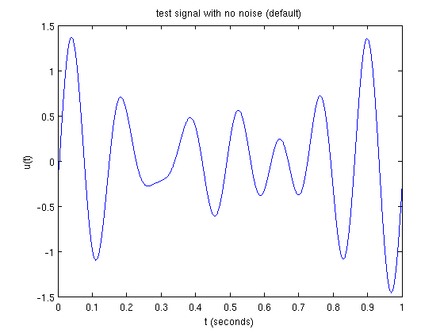
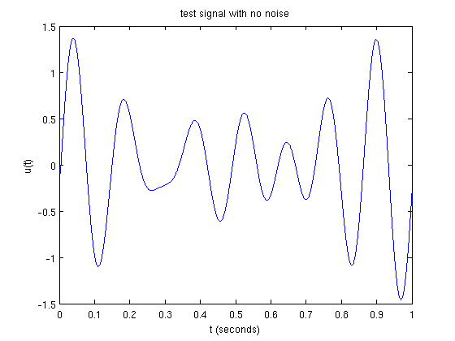
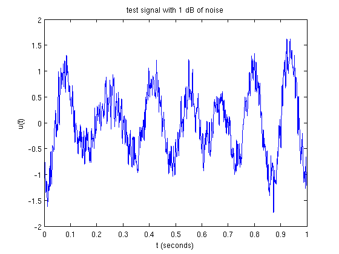
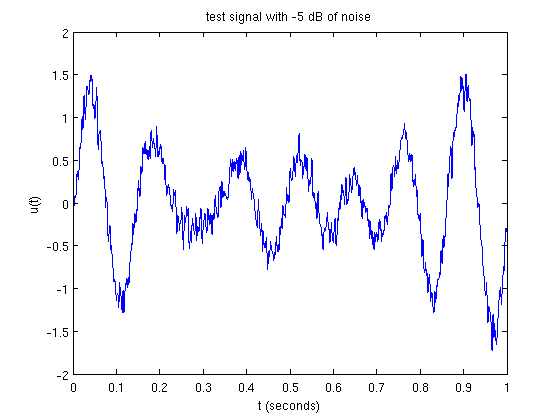
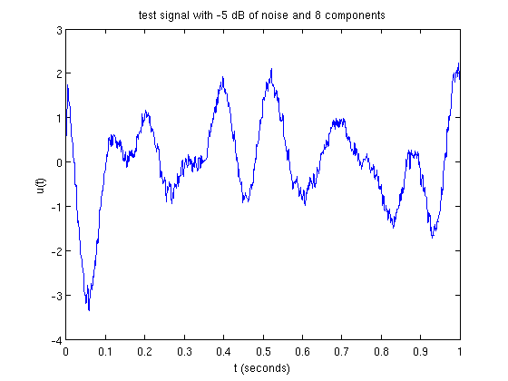
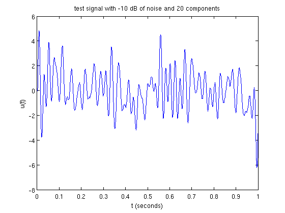

Generating a Test Signal
It is often useful to be able to quickly generate band-limited test signals for the purposes of testing signal processing programs. This file describes how to do so using the gen_test_signal function.
Rather than compute the sum of several sinusoids (which can be quite time consuming when done at a high sampling rate), gen_test_signal constructs a Fourier representation of the desired signal and computes its inverse transform.
Contents
A Simple Test Signal
To generate 1 second of a signal sampled at 10 kHz containing 3 frequency components no greater than 10 Hz, use the following parameters:
dur = 1; fs = 10^4; dt = 1/fs; fmax = 10; t = linspace(0,dur,floor(dur/dt));
Adding Noise
Generating a simple signal with no added noise is easy:
fig_title = 'test signal with no noise (default)'; rand('twister',0); randn('state',0); u = gen_test_signal(dur,dt,fmax); plot_signal(t,u,fig_title)
One can explicitly set the noise power (in dB); hence, if the power is -inf, no noise will be added:
fig_title = 'test signal with no noise'; rand('twister',0); randn('state',0); u = gen_test_signal(dur,dt,fmax,-inf); plot_signal(t,u,fig_title)
Here are some examples with added noise:
np = 1; fig_title = sprintf('test signal with %d dB of noise',np); rand('twister',0); randn('state',0); u = gen_test_signal(dur,dt,fmax,np); plot_signal(t,u,fig_title)
np = -5; fig_title = sprintf('test signal with %d dB of noise',np); rand('twister',0); randn('state',0); u = gen_test_signal(dur,dt,fmax,np); plot_signal(t,u,fig_title)
Specifying the Number of Frequency Components
Once can also adjust the number of frequency components:
np = -5; c = 8; fig_title = sprintf('test signal with %d dB of noise and %d components',np,c); rand('twister',0); randn('state',0); u = gen_test_signal(dur,dt,fmax,np,c); plot_signal(t,u,fig_title)
fmax = 50; np = -10; c = 20; fig_title = sprintf('test signal with %d dB of noise and %d components',np,c); rand('twister',0); randn('state',0); u = gen_test_signal(dur,dt,fmax,np,c); plot_signal(t,u,fig_title)